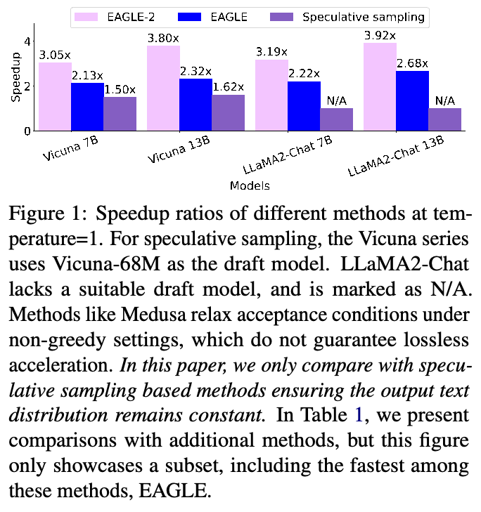
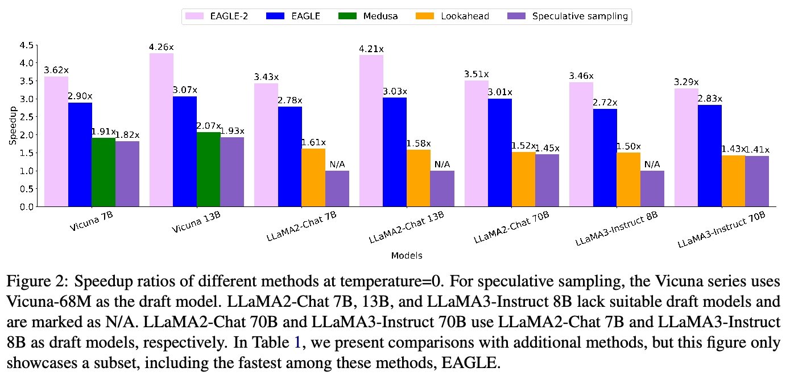
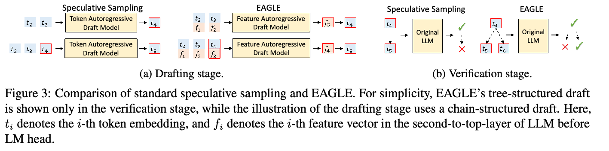
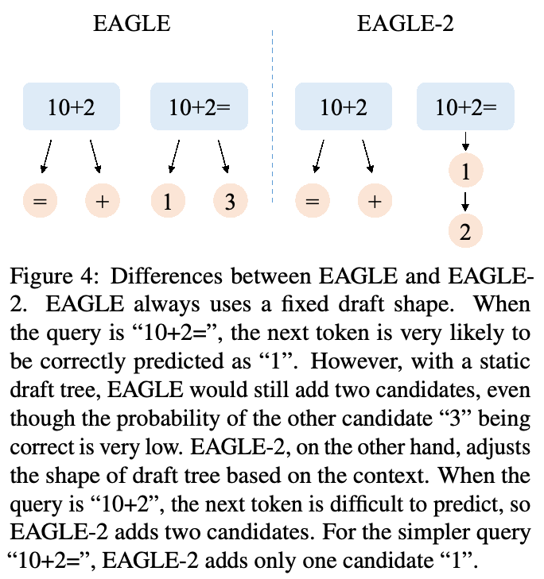
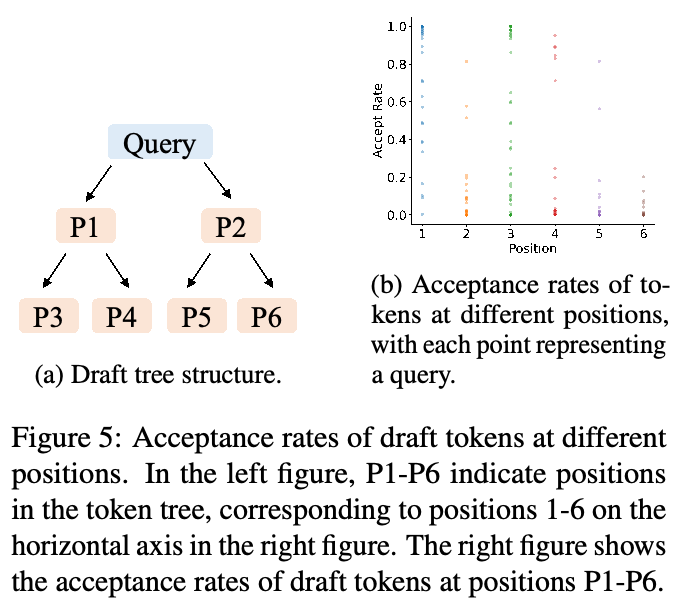
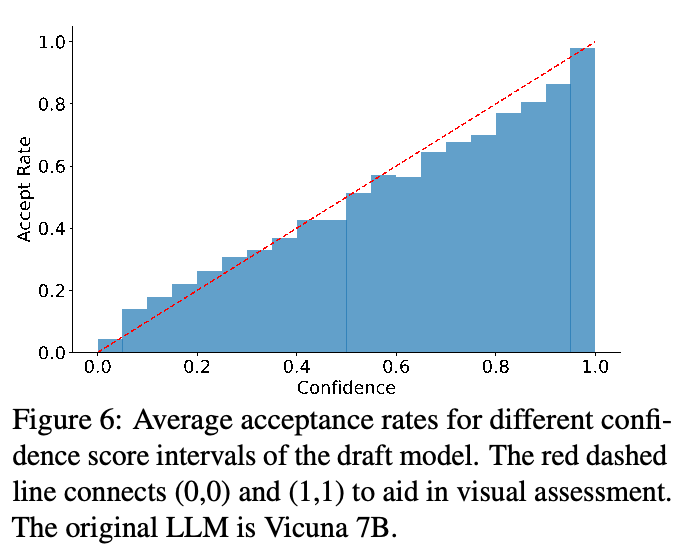
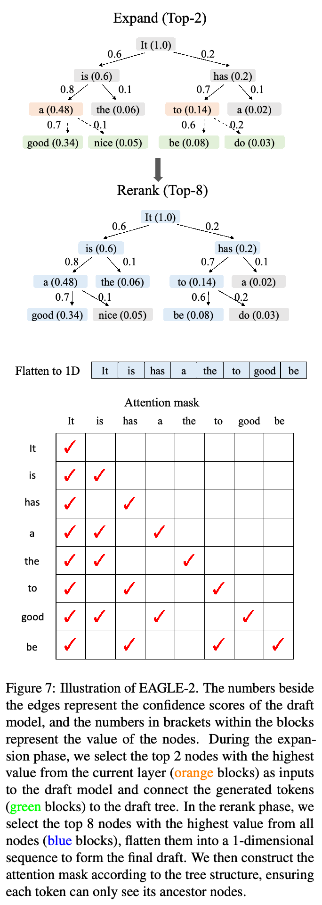
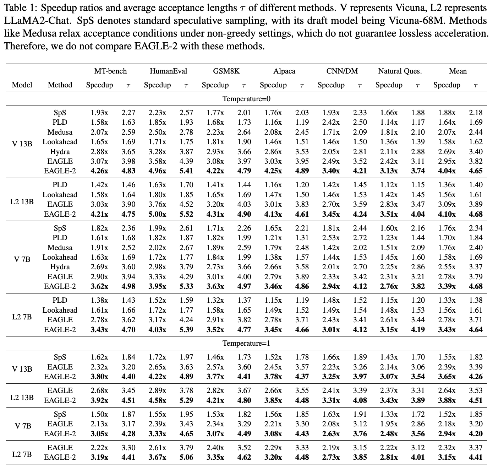
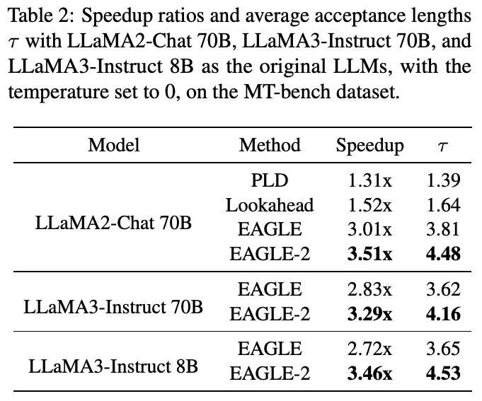
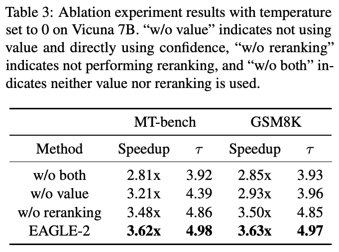

EAGLE-2：通过动态草稿树加速语言模型推理
Yuhui Li1,3,*，Fangyun Wei2，Chao Zhang1，Hongyang Zhang3,4,†
1北京大学智能学院；2Microsoft Research；3滑铁卢大学；4Vector Institute。
yuhui.li@stu.pku.edu.cn，fawe@microsoft.com
c.zhang@pku.edu.cn，hongyang.zhang@uwaterloo.ca
摘要
现代大语言模型（LLM）的推理成本高且耗时长，speculative sampling 已被证明是一种有效解决方案。EAGLE 等大多数 speculative sampling 方法采用静态草稿树，隐含假设草稿 token 的接受率仅取决于其位置。有趣的是，我们发现草稿 token 的接受率还依赖上下文。本文在 EAGLE 基础上提出 EAGLE-2，将上下文感知的动态草稿树这一新技术引入草稿建模。这项改进利用了 EAGLE 草稿模型校准良好的事实：草稿模型的置信度分数能够以很小的误差近似接受率。我们在三个 LLM 系列和六项任务上进行了广泛评估，EAGLE-2 实现了 3.05–4.26 倍的加速比，比 EAGLE-1 快 20%–40%。EAGLE-2 还确保生成文本的分布保持不变，因此是一种无损加速算法。代码已开源：https://github.com/SafeAILab/EAGLE。
1 引言
现代大语言模型（LLM）（OpenAI, 2023; Touvron et al., 2023）展现出令人瞩目的能力，并已广泛用于各个领域。然而，其参数规模大幅增长，甚至超过数千亿。在自回归生成过程中，每生成一个 token 都需要访问全部模型参数。单次对话可能生成数百至数千个 token，使 LLM 推理缓慢而昂贵。Speculative sampling（Leviathan et al., 2023; Chen et al., 2023a）方法通过快速生成草稿 token，再并行验证来解决这一问题。这些方法在一次前向计算中生成多个 token，显著降低推理延迟。

标准 speculative sampling（Leviathan et al., 2023; Chen et al., 2023a）采用链式草稿。为提高接受长度，近期 speculative sampling 工作开始采用树形草稿。Sequoia（Chen et al., 2024）明确假设草稿 token 的接受率仅取决于它在树中的位置。EAGLE（Li et al., 2024b）和 Medusa（Cai et al., 2024）在所有上下文中采用相同的静态草稿树结构：草稿阶段的第 \(i\) 步增加 \(k\) 个候选，其中 \(k\) 固定。这隐含采用了上述假设。然而，该假设似乎与 speculative sampling 的一个认识相矛盾：有些 token 更简单，可以由较小的模型预测。我们的实验（见第 3.1 节）表明，草稿 token 的接受率不仅依赖位置，还高度依赖上下文。因此，草稿树的静态结构存在内在局限。根据不同上下文中草稿 token 的接受率动态调整草稿树结构，可以取得更好的结果。（本句原文跨页，已接续。）
*本工作于 Yuhui Li 在滑铁卢大学实习期间完成。†通讯作者。
原文页码：7421。载于《2024 年自然语言处理经验方法会议论文集》，第 7421–7432 页；2024 年 11 月 12–16 日。©2024 Association for Computational Linguistics。

（本页开头关于动态调整草稿树结构的跨页句已接续至第 1 页。）
然而，获得草稿 token 的接受率需要原始 LLM 的前向计算结果，这与 speculative sampling 减少原始 LLM 前向次数的目标相冲突。幸运的是，我们发现 EAGLE 校准良好：草稿模型的置信度分数（概率）能够很好地近似草稿 token 的接受率（见第 3.2 节）。这使采用依赖上下文的动态草稿树结构成为可能。
我们提出 EAGLE-2，利用草稿模型的置信度分数近似接受率。在此基础上，它动态调整草稿树结构，增加被接受的 token 数量。我们在六项任务上进行了全面而广泛的测试：多轮对话、代码生成、数学推理、指令遵循、摘要和问答。使用的数据集分别为 MT-bench（Zheng et al., 2023）、HumanEval（Chen et al., 2021）、GSM8K（Cobbe et al., 2021）、Alpaca（Taori et al., 2023）、CNN/Daily Mail（Nallapati et al., 2016）和 Natural Questions（Kwiatkowski et al., 2019）。比较方法包括六种先进的 speculative sampling 方法：标准 speculative sampling（Leviathan et al., 2023; Chen et al., 2023a; Joao Gante, 2023）、PLD（Saxena, 2023）、Medusa（Cai et al., 2024）、Lookahead（Fu et al., 2023）、Hydra（Ankner et al., 2024）和 EAGLE（Li et al., 2024b）。我们在 Vicuna、LLaMA2-Chat 和 LLaMA3-Instruct 三个 LLM 系列上开展实验。在所有实验中，EAGLE-2 都取得了最佳性能，实现了 2.5–5 倍加速。图 1 和图 2 展示了 EAGLE-2 与其他 speculative sampling 方法在 MT-bench 上的加速比。MT-bench 是一个多轮对话数据集，贴近 ChatGPT 等模型的现实使用场景，经常用于评估最先进的开源和闭源模型。在 MT-bench 数据集上，EAGLE-2 约比 Medusa 快两倍，约比 Lookahead 快 2.3 倍，同时保证输出分布不变。
除性能外，EAGLE-2 还具有以下优点：
- 开箱即用。相比 EAGLE，EAGLE-2 无需训练任何额外模型。它不训练单独的模型预测草稿树结构，而是根据草稿模型的置信度分数调整草稿树结构；这些分数本来就是 speculative sampling 必需的。因此，EAGLE-2 不需要额外训练。
- 可靠性。EAGLE-2 不微调或更新原始 LLM 的参数，也不放宽接受条件。这保证生成文本的分布与原始 LLM 完全一致，且具有可证明的保证。
2 预备知识
2.1 Speculative Sampling
Speculative sampling（Leviathan et al., 2023; Chen et al., 2023a; Sun et al., 2024c,b）的核心思想是（接下页）
原文页码：7422。

（接上页）先生成草稿，再进行验证：快速生成可能正确的草稿，然后检查草稿中的哪些 token 可以被接受。我们用 \(t_i\) 表示第 \(i\) 个 token，用 \(T_{a:b}\) 表示 token 序列 \(t_a,t_{a+1},\ldots,t_b\)。Speculative sampling 交替执行草稿与验证阶段。
考虑前缀 \(T_{1:j}\)，在草稿阶段，speculative sampling 调用草稿模型（比原始 LLM 更小的 LLM），以前缀 \(T_{1:j}\) 自回归生成草稿 \(\hat T_{j+1:j+k}\)，同时记录每个 token 的概率 \(\hat p\)。在验证阶段，speculative sampling 调用原始 LLM 检查草稿 \(\hat T_{j+1:j+k}\)，并记录其概率 \(p\)。随后，speculative sampling 从前到后依次判断是否接受草稿 token。对于 token \(\hat t_{j+i}\)，其接受概率为 \(\min(1,p_{j+i}(\hat t_{j+i})/\hat p_{j+i}(\hat t_{j+i}))\)。如果接受该 token，则继续检查下一个 token。否则，从分布 \(\operatorname{norm}(\max(0,p_{j+i}-\hat p_{j+i}))\) 中采样一个 token 替换 \(\hat t_{j+i}\)，并丢弃草稿中的剩余 token。Leviathan et al.（2023）附录 A.1 证明，speculative sampling 与常规自回归 decoding 的分布一致。EAGLE 和 EAGLE-2 都采用这一框架。
2.2 EAGLE
EAGLE（Li et al., 2024b）是对 speculative sampling 的改进。在本工作提交时，EAGLE 在 Spec-Bench（Xia et al., 2024）中排名第一；这是一个用于评估不同场景下 speculative decoding 方法的综合基准。
草稿阶段。标准 speculative sampling 自回归预测 token 序列，EAGLE 则在结构性更强的特征层面（LM head 之前）进行自回归，再用原始 LLM 的 LM Head 得到草稿 token。采样过程会为特征序列引入不确定性。为解决这一问题，EAGLE 还将提前一个时间步的 token 序列输入草稿模型，如图 3a 所示。

验证阶段。标准 speculative sampling 的草稿为链式结构，如果一个草稿 token 被拒绝，其所有后续 token 都必须丢弃。EAGLE 使用树形草稿，允许在一个草稿 token 被拒绝时尝试其他分支。图 3b 展示了两者的区别。
EAGLE 与 EAGLE-2 的区别。EAGLE 的草稿树形状固定，草稿阶段填充相应位置。EAGLE-2 通过引入可动态调整的草稿树进行改进。图 4 用一个简单例子展示了 EAGLE 与 EAGLE-2 的区别。
3 观察
3.1 依赖上下文的接受率
首先，我们评估使用动态草稿树的必要性。这取决于草稿 token 的接受率是否仅与其位置有关。我们在 Alpaca 数据集和 Vicuna 7B 上测试了草稿树不同位置的 token 接受率。结果见图 5。（本句原文跨页，已接续。）
原文页码：7423。

总体而言，草稿 token 的接受率依赖位置：P1 位置最高，P6 位置最低。草稿树左上方的草稿 token（如 P1 位置）接受率更高，右下方（如 P6 位置）则更低。这支持了 EAGLE、Medusa 等方法的静态草稿树中，左上方节点更多、右下方节点更少的设计依据。然而，我们也观察到同一位置的接受率存在显著方差，说明草稿 token 被接受的概率不仅依赖位置，还依赖上下文。这意味着，上下文感知的动态草稿树比静态草稿树更有潜力。
3.2 校准良好的草稿模型
为了采用动态草稿树，我们需要一种不调用原始 LLM、低成本估计草稿 token 接受率的方法。我们在 Alpaca 数据集上进行了实验，探索草稿模型置信度分数（LLM 对每个 token 的输出概率）与接受率的关系。如图 6 所示，草稿模型的置信度分数与 token 接受率高度正相关。置信度分数低于 0.05 的草稿 token，接受率约为 0.04；置信度分数高于 0.95 的草稿 token，接受率约为 0.98。因此，我们可以直接用草稿模型的置信度分数估计接受率，无需额外开销，从而动态调整草稿树。GLIDE、CAPE（Du et al., 2024）等其他方法的草稿模型也有类似现象。

4 上下文感知的动态草稿树
基于上述观察，我们提出 EAGLE-2，一种动态调整草稿树的 LLM 推理加速算法。EAGLE-2 不改变草稿模型的训练和推理，也不影响验证阶段。其改进集中于两个方面：如何扩展草稿树（第 4.1 节），以及如何对草稿 token 重新排序（第 4.2 节）。在扩展阶段，我们将草稿树最新一层中最有希望的节点输入草稿模型，形成下一层。在重排序阶段，我们选择接受概率较高的 token，构成验证阶段原始 LLM 的输入。
草稿树中的一个节点代表一个 token。下文交替使用“节点”和“token”。
4.1 扩展阶段
借助 tree attention，草稿模型能够同时输入当前层的全部 token，在一次前向计算中得到下一个 token 的概率，从而扩展当前层的全部 token。但是，一次输入过多 token 会减慢草稿模型的前向计算，而草稿树每层的 token 数又呈指数增长。因此，我们需要有选择地扩展草稿树。
我们从当前层选择全局接受概率最高的 Top-k 个 token 进行扩展。在 speculative sampling 中，拒绝一个草稿 token 会导致其后续全部 token 被丢弃；只有某个 token 的所有前缀都被接受，它最终才会被接受。（本句原文跨页，已接续。）
原文页码：7424。
token \(t_i\) 的全局接受率，等于从根节点到 \(t_i\) 路径上全部 token 的接受率之积。我们将其定义为价值 \(V_i\)：
\[V_i=\prod_{t_j\in\operatorname{Path}(\mathrm{root},t_i)}p_j\approx\prod_{t_j\in\operatorname{Path}(\mathrm{root},t_i)}c_j,\]
其中，\(\operatorname{Path}(\mathrm{root},t_i)\) 表示草稿树中从根节点到节点 \(t_i\) 的路径，\(p_j\) 表示节点 \(t_j\) 的接受率，\(c_j\) 表示草稿模型对 \(t_j\) 给出的置信度分数。第 3.2 节的实验表明，置信度分数与接受率高度正相关。我们利用这一关系近似价值。
从价值较高的 token 出发的分支更可能被接受。因此，我们选择最后一层中价值最高的 Top-k 个节点作为草稿模型输入，并根据输出扩展草稿树。图 7 上半部分展示了扩展阶段。
4.2 重排序阶段
扩展阶段的目的是加深草稿树。由于接受率介于 0 和 1 之间，更深的 token 的价值更低。一些未被扩展的浅层节点，价值可能高于已扩展的深层节点。因此，我们不直接用扩展阶段选中的 token 作为草稿，而是对全部草稿 token 重新排序，选择价值最高的前 \(m\) 个 token。一个节点的价值始终小于或等于其父节点。对于价值相同的节点，优先选择较浅的节点。这确保重排序后选出的前 \(m\) 个 token 仍组成一棵连通的树。
随后，我们将选中的 token 展平为一维序列，作为验证阶段的输入。为了与常规自回归 decoding 保持一致，还需调整 attention mask。在常规自回归 decoding 中，每个 token 可以看到此前的所有 token，因此 attention 矩阵为下三角矩阵。采用草稿树时，不同分支的 token 不应彼此可见。因此，必须根据树结构调整 attention mask，确保每个 token 只能看到其祖先节点。图 7 下半部分展示了重排序阶段。
5 实验

原文页码：7425。
模型。我们在 Vicuna 7B、13B（Chiang et al., 2023），LLaMA2-Chat 7B、13B、70B（Touvron et al., 2023），以及 LLaMA3-Instruct 8B、70B 模型（Meta, 2024）上进行实验。
任务。我们全面评估了六项生成任务。对于多轮对话、代码生成、数学推理、指令遵循、摘要和问答任务，我们分别选择 MT-bench（Zheng et al., 2023）、HumanEval（Chen et al., 2021）、GSM8K（Cobbe et al., 2021）、Alpaca（Taori et al., 2023）、CNN/Daily Mail（Nallapati et al., 2016）和 Natural Questions（Kwiatkowski et al., 2019）数据集。
指标。EAGLE-2 不微调原始 LLM，也不放宽接受条件，因此是一种无损加速方法。故我们不评估生成质量，而使用以下指标评估加速性能：
- 加速比：实际测试中，相对于常规自回归 decoding 的加速比。
- 平均接受长度 \(\tau\)：每个草稿—验证周期生成的平均 token 数，对应从草稿中接受的 token 数。平均接受长度的优点在于不依赖硬件和运行环境，缺点是不体现草稿模型的开销。
为什么不包含接受率？接受率仅反映草稿模型的性能。由于 EAGLE-2 不修改草稿模型的结构，其接受率与 EAGLE 相同。
比较。我们以常规自回归 decoding 为基线，也就是加速比的基准（1.00 倍）。我们将 EAGLE-2 与近期的无损 speculative sampling 方法进行比较，包括标准 speculative sampling（Leviathan et al., 2023; Chen et al., 2023a; Joao Gante, 2023）、PLD（Saxena, 2023）、Medusa（Cai et al., 2024）、Lookahead（Fu et al., 2023）、Hydra（Ankner et al., 2024）和 EAGLE（Li et al., 2024b）。加速比依赖硬件，因此我们在相同设备上测试不同方法，以保证公平性。比较实验使用 Spec-Bench（Xia et al., 2024）。这些方法和 EAGLE 的实现细节见附录 A。
5.1 有效性
图 1、图 2、表 1 和表 2 展示不同方法的加速比。在我们测试的全部数据集和 LLM 上，EAGLE-2 均取得最高加速比。大多数 speculative sampling 方法在代码生成任务（HumanEval）上加速最高，这得益于代码中广泛使用的固定模板。EAGLE 在代码生成任务上实现了最高 5 倍加速。以 Vicuna 为原始 LLM 时，PLD 在摘要任务（CNN/DM）上取得了它最高的加速比，这是由于 PLD 通过检索生成草稿，而 Vicuna 执行摘要时上下文重合度很高。以 Vicuna-68M 为草稿模型的标准 speculative sampling 也取得显著加速，但训练开销远高于其他方法。PLD 和 Lookahead 无需训练，而 Medusa、Hydra、EAGLE 和 EAGLE-2 使用 SFT 数据集训练草稿模型。Vicuna-68M 同时使用预训练和 SFT 数据集，其中预训练数据集远大于 SFT 数据集。
表 1 和表 2 展示了不同方法的平均接受长度，这一指标不依赖硬件。在我们测试的全部数据集和 LLM 上，EAGLE-2 都取得最长的平均接受长度。EAGLE-2 每个草稿—验证周期生成约 4–5.5 个 token，显著高于其他方法，约为标准 speculative sampling 和 Medusa 的两倍。PLD 和 Lookahead 的平均接受长度较短，但它们没有草稿模型，或者草稿模型不是神经网络，草稿阶段开销很低，因此加速比非常接近平均接受长度。
相比其他任务，Medusa、Hydra、EAGLE 和 EAGLE-2 在问答（Natural Questions）和摘要（CNN/DM）任务上的平均接受长度较低，而标准 speculative sampling 未表现出这一降幅。加速比也出现相同规律。这种差异可能源自草稿模型训练数据的不同。标准 speculative sampling 的草稿模型同时使用预训练和 SFT 数据集，而 Medusa、Hydra、EAGLE 和 EAGLE-2 仅使用 SFT 数据集。Natural Questions 包含世界知识问题，例如“2015 年（接下页）
原文页码：7426。

（接上页）联合式橄榄球世界杯在哪里举办？”，而世界知识主要通过预训练获得，并非 SFT。摘要任务在 SFT 数据集中也较少出现。这表明扩大草稿模型训练数据可能带来收益。尽管如此，EAGLE-2 在这两个数据集上仍优于标准 speculative sampling。
5.2 消融研究
本节进行消融研究。
5.2.1 价值与置信度分数
EAGLE 的草稿模型可以很好地近似接受率，但这种近似是局部的，不能反映某个草稿 token 最终被接受的实际概率。因此，选择待扩展节点时，我们使用价值作为排序依据；价值等于草稿 token 的置信度分数与其祖先节点置信度分数的乘积。本节比较按价值扩展和按置信度分数扩展对性能的影响。表 3 的实验结果表明，按价值扩展时，加速比和平均接受长度都更高，验证了 EAGLE-2 方法的合理性。
5.2.2 重排序
EAGLE-2 扩展阶段的目的是加深草稿树，但选中的 token 从全局来看，可能不如某些未选中的浅层节点。因此，在重排序阶段，我们对全部草稿 token 重新排序。我们使用 MT-bench 和 GSM8K 数据集，对这一操作进行了消融研究。如表 3 所示，重排序同时提高了平均接受长度和加速比。（本句原文跨页，已接续。）
原文页码：7427。

（本页关于重排序改善效果的跨页句已接续至第 7 页。）

6 相关工作
随着 LLM 广泛应用，大量工作（Liu et al., 2023b）致力于加速 LLM 推理，例如低比特量化（Hubara et al., 2018; Shen et al., 2020; Kim et al., 2021; Zadeh et al., 2020; Zafrir et al., 2019）、剪枝（Gale et al., 2019; Sanh et al., 2020）和知识蒸馏（Hinton et al., 2015）。这些方法通过降低 LLM 每次前向计算的计算成本来减少生成延迟。然而，它们往往会在一定程度上降低 LLM 性能，因此需要在生成质量与计算开销之间权衡。
Speculative sampling 方法通过原始 LLM 验证来实现无损加速。早期 speculative decoding 方法（Stern et al., 2018; Sun et al., 2021）在贪心设置下加速生成，而 Leviathan et al.（2023）和 Chen et al.（2023a）提出 speculative sampling，将草稿—验证框架扩展至非贪心生成。后续工作大多着重减少草稿开销、提高草稿与原始 LLM 的一致性。SpecInfer（Miao et al., 2023）整合多个小模型作为草稿模型，将它们的草稿聚合为树，并用 tree attention 并行验证。Medusa（Cai et al., 2024）训练一组 MLP，利用原始 LLM 的特征并行预测多个 token，显著降低草稿阶段延迟。EAGLE（Li et al., 2024b）自回归预测特征序列，而非 token 序列，并将采样结果输入草稿模型，以解决特征层面的不确定性，显著提高草稿模型准确性。这种消除不确定性的原理也被用于 Hydra（Ankner et al., 2024）和 Recurrent Drafter（Zhang et al., 2024）。Parallel Decoding（Santilli et al., 2023）、Lookahead（Fu et al., 2023）、Ouroboros（Zhao et al., 2024）和 CLLMs（Kou et al., 2024）利用 Jacobi 迭代生成草稿。Draft & Verify（Zhang et al., 2023）等方法（Hooper et al., 2023; Yang et al., 2023b; Monea et al., 2023; Li et al., 2024a; Yi et al., 2024; Liu et al., 2024; Sun et al., 2024a; Elhoushi et al., 2024; Svirschevski et al., 2024）采用跳层或提前退出等技术，将原始 LLM 的部分参数用作草稿模型。REST（Fu et al., 2024）和 LLMA（Yang et al., 2023a）通过检索生成草稿。Online Speculative Decoding（Liu et al., 2023a）和 DistillSpec（Zhou et al., 2024）通过额外训练进一步对齐草稿模型与原始 LLM。Cascade Speculative Drafting（Chen et al., 2023b）和 Staged Speculative Decoding（Spector and Re, 2023）级联不同规模的草稿模型。
Speculative sampling 方法可以无损加速，也可以牺牲质量换取更高加速比。例如，BiLD（Kim et al., 2024）放宽接受条件，而 Medusa-2（Cai et al., 2024）、CLLMs（Kou et al., 2024）和 SPACE（Yi et al., 2024）微调原始 LLM。
Sorted Llama（Kavehzadeh et al., 2024）和 LITE（Varshney et al., 2023）将置信度作为 token 质量指标。一些工作已经利用置信度实现部分动态的草稿树。BiLD（Kim et al., 2024）和 Kangaroo（Liu et al., 2024）根据草稿模型置信度提前停止，以控制树深。GLIDE 和 CAPE（Du et al., 2024）（接下页）
原文页码：7428。
（接上页）在 Top-1 token 置信度较低时增加候选，以控制树深，但这些额外候选不会继续扩展，因而树结构受到限制。相比之下，EAGLE-2 没有这些限制，可以灵活动态调整草稿树结构，取得更好的性能。
7 结论
本文提出 EAGLE-2，一种高效、无损的 speculative sampling 方法。我们发现，EAGLE 草稿模型的置信度可以很好地近似草稿 token 的接受率。在此基础上，EAGLE-2 采用依赖上下文的草稿树结构，显著增加被接受的草稿 token 数量，从而获得更高加速比。EAGLE-2 保证生成结果与原始 LLM 一致，且无需额外训练。我们在多个数据集上使用多种 LLM 进行了广泛评估，并将 EAGLE-2 与数种最先进的 speculative sampling 方法比较。在全部实验中，EAGLE-2 均取得最高加速比。
局限性
EAGLE-2 的局限性与 EAGLE 相似，因为它需要训练草稿模型。训练草稿模型时，我们使用 SFT 数据集 ShareGPT。草稿模型训练也需要一定计算资源；为 70B 原始 LLM 训练一个草稿模型，需要 4 块 A100（40G）GPU，耗时一至两天。然而，在大规模部署和应用中，这样的训练成本可以忽略不计。此外，EAGLE-2 使用草稿模型置信度分数近似接受率，这要求草稿模型校准良好。
致谢
Yuhui Li 和 Chao Zhang 获得国家自然科学基金项目 62071013，以及国家重点研发计划项目 2018AAA0100300 支持。Hongyang Zhang 获得 NSERC Discovery Grant RGPIN-2022-03215、DGECR-2022-00357 和 Compute Canada 支持。
参考文献
Zachary Ankner, Rishab Parthasarathy, Aniruddha Nrusimha, Christopher Rinard, Jonathan Ragan-Kelley, and William Brandon. 2024. Hydra：用于 Medusa decoding 的顺序依赖草稿头。arXiv preprint arXiv:2402.05109.
Tianle Cai, Yuhong Li, Zhengyang Geng, Hongwu Peng, Jason D. Lee, Deming Chen, and Tri Dao. 2024. Medusa：采用多个 decoding 头的简单 LLM 推理加速框架。arXiv preprint arXiv:2401.10774.
Charlie Chen, Sebastian Borgeaud, Geoffrey Irving, Jean-Baptiste Lespiau, Laurent Sifre, and John Jumper. 2023a. 通过 speculative sampling 加速大语言模型 decoding。arXiv preprint arXiv:2302.01318.
Mark Chen, Jerry Tworek, Heewoo Jun, Qiming Yuan, Henrique Ponde de Oliveira Pinto, Jared Kaplan, Harri Edwards, Yuri Burda, Nicholas Joseph, Greg Brockman, et al. 2021. 评估在代码上训练的大语言模型。arXiv preprint arXiv:2107.03374.
Zhuoming Chen, Avner May, Ruslan Svirschevski, Yuhsun Huang, Max Ryabinin, Zhihao Jia, and Beidi Chen. 2024. Sequoia：可扩展、鲁棒且感知硬件的 speculative decoding。arXiv preprint arXiv:2402.12374.
Ziyi Chen, Xiaocong Yang, Jiacheng Lin, Chenkai Sun, Jie Huang, and Kevin Chen-Chuan Chang. 2023b. 通过级联 speculative drafting 进一步加速 LLM 推理。arXiv preprint arXiv:2312.11462.
Wei-Lin Chiang, Zhuohan Li, Zi Lin, Ying Sheng, Zhanghao Wu, Hao Zhang, Lianmin Zheng, Siyuan Zhuang, Yonghao Zhuang, Joseph E. Gonzalez, Ion Stoica, and Eric P. Xing. 2023. Vicuna：以 90%* 的 ChatGPT 质量令 GPT-4 印象深刻的开源聊天机器人。
Karl Cobbe, Vineet Kosaraju, Mohammad Bavarian, Mark Chen, Heewoo Jun, Lukasz Kaiser, Matthias Plappert, Jerry Tworek, Jacob Hilton, Reiichiro Nakano, et al. 2021. 训练验证器求解数学文字题。arXiv preprint arXiv:2110.14168.
Cunxiao Du, Jing Jiang, Xu Yuanchen, Jiawei Wu, Sicheng Yu, Yongqi Li, Shenggui Li, Kai Xu, Liqiang Nie, Zhaopeng Tu, et al. 2024. Glide with a cape：低负担的 speculative decoding 加速方法。arXiv preprint arXiv:2402.02082.
Mostafa Elhoushi, Akshat Shrivastava, Diana Liskovich, Basil Hosmer, Bram Wasti, Liangzhen Lai, Anas Mahmoud, Bilge Acun, Saurabh Agarwal, Ahmed Roman, et al. 2024. Layer skip：实现提前退出推理与 self-speculative decoding。arXiv preprint arXiv:2404.16710.
Yichao Fu, Peter Bailis, Ion Stoica, and Hao Zhang. 2023. 使用 Lookahead decoding 打破 LLM 推理的顺序依赖。
原文页码：7429。
Yichao Fu, Peter Bailis, Ion Stoica, and Hao Zhang. 2024. 使用 Lookahead decoding 打破 LLM 推理的顺序依赖。arXiv preprint arXiv:2402.02057.
Trevor Gale, Erich Elsen, and Sara Hooker. 2019. 深度神经网络稀疏性的现状。(2019). arXiv preprint cs.LG/1902.09574.
Geoffrey Hinton, Oriol Vinyals, and Jeff Dean. 2015. 蒸馏神经网络中的知识。arXiv preprint arXiv:1503.02531.
Coleman Hooper, Sehoon Kim, Hiva Mohammadzadeh, Hasan Genc, Kurt Keutzer, Amir Gholami, and Sophia Shao. 2023. SPEED：用于高效 decoding 的推测流水线执行。arXiv preprint arXiv:2310.12072.
Itay Hubara, Matthieu Courbariaux, Daniel Soudry, Ran El-Yaniv, and Yoshua Bengio. 2018. 量化神经网络：使用低精度权重和激活训练神经网络。Journal of Machine Learning Research, 18(187):1–30.
Joao Gante. 2023. 辅助生成：低延迟文本生成的新方向。
Parsa Kavehzadeh, Mojtaba Valipour, Marzieh Tahaei, Ali Ghodsi, Boxing Chen, and Mehdi Rezagholizadeh. 2024. Sorted Llama：释放大语言模型中间层的潜力，实现动态推理。载于 Findings of the Association for Computational Linguistics: EACL 2024, pages 2129–2145.
Sehoon Kim, Amir Gholami, Zhewei Yao, Michael W Mahoney, and Kurt Keutzer. 2021. I-BERT：仅使用整数的 BERT 量化。载于 International Conference on Machine Learning, pages 5506–5518. PMLR.
Sehoon Kim, Karttikeya Mangalam, Suhong Moon, Jitendra Malik, Michael W Mahoney, Amir Gholami, and Kurt Keutzer. 2024. 使用 Big Little Decoder 的 speculative decoding。Advances in Neural Information Processing Systems, 36.
Siqi Kou, Lanxiang Hu, Zhezhi He, Zhijie Deng, and Hao Zhang. 2024. CLLMs：一致性大语言模型。arXiv preprint arXiv:2403.00835.
Tom Kwiatkowski, Jennimaria Palomaki, Olivia Redfield, Michael Collins, Ankur Parikh, Chris Alberti, Danielle Epstein, Illia Polosukhin, Jacob Devlin, Kenton Lee, et al. 2019. Natural Questions：问答研究的基准。Transactions of the Association for Computational Linguistics, 7:453–466.
Yaniv Leviathan, Matan Kalman, and Yossi Matias. 2023. 通过 speculative decoding 实现 transformer 快速推理。载于 International Conference on Machine Learning, pages 19274–19286. PMLR.
Minghan Li, Xilun Chen, Ari Holtzman, Beidi Chen, Jimmy Lin, Wen-tau Yih, and Xi Victoria Lin. 2024a. 用于 LLM 生成与归因的最近邻 speculative decoding。arXiv preprint arXiv:2405.19325.
Yuhui Li, Fangyun Wei, Chao Zhang, and Hongyang Zhang. 2024b. EAGLE：Speculative sampling 需要重新思考特征不确定性。载于 International Conference on Machine Learning.
Fangcheng Liu, Yehui Tang, Zhenhua Liu, Yunsheng Ni, Kai Han, and Yunhe Wang. 2024. Kangaroo：通过双重提前退出实现无损 self-speculative decoding。arXiv preprint arXiv:2404.18911.
Xiaoxuan Liu, Lanxiang Hu, Peter Bailis, Ion Stoica, Zhijie Deng, Alvin Cheung, and Hao Zhang. 2023a. 在线 speculative decoding。arXiv preprint arXiv:2310.07177.
Zichang Liu, Jue Wang, Tri Dao, Tianyi Zhou, Binhang Yuan, Zhao Song, Anshumali Shrivastava, Ce Zhang, Yuandong Tian, Christopher Re, et al. 2023b. Deja vu：用于高效 LLM 推理的上下文稀疏性。载于 International Conference on Machine Learning, pages 22137–22176. PMLR.
Meta. 2024. LLaMA3. https://github.com/pytorch-labs/gpt-fast/.
Xupeng Miao, Gabriele Oliaro, Zhihao Zhang, Xinhao Cheng, Zeyu Wang, Rae Ying Yee Wong, Zhuoming Chen, Daiyaan Arfeen, Reyna Abhyankar, and Zhihao Jia. 2023. SpecInfer：通过推测推理和 token 树验证加速生成式 LLM 服务。arXiv preprint arXiv:2305.09781.
Giovanni Monea, Armand Joulin, and Edouard Grave. 2023. PASS：并行 speculative sampling。arXiv preprint arXiv:2311.13581.
Ramesh Nallapati, Bowen Zhou, Caglar Gulcehre, Bing Xiang, et al. 2016. 使用 sequence-to-sequence RNN 及进一步方法进行抽象式文本摘要。arXiv preprint arXiv:1602.06023.
R OpenAI. 2023. GPT-4 技术报告。arxiv 2303.08774. View in Article, 2(5).
Victor Sanh, Thomas Wolf, and Alexander Rush. 2020. Movement pruning：通过微调实现自适应稀疏性。Advances in Neural Information Processing Systems, 33:20378–20389.
Andrea Santilli, Silvio Severino, Emilian Postolache, Valentino Maiorca, Michele Mancusi, Riccardo Marin, and Emanuele Rodolà. 2023. 通过并行 decoding 加速用于翻译的 transformer 推理。arXiv preprint arXiv:2305.10427.
Apoorv Saxena. 2023. Prompt lookup decoding。
Sheng Shen, Zhen Dong, Jiayu Ye, Linjian Ma, Zhewei Yao, Amir Gholami, Michael W Mahoney, and Kurt Keutzer. 2020. Q-BERT：基于 Hessian 的 BERT 超低精度量化。载于 Proceedings of the AAAI Conference on Artificial Intelligence, volume 34, pages 8815–8821.（本条原文跨页，已接续。）
原文页码：7430。
（本页开头 Q-BERT 条目的跨页内容已接续至第 10 页。）
Benjamin Spector and Chris Re. 2023. 使用分阶段 speculative decoding 加速 LLM 推理。arXiv preprint arXiv:2308.04623.
Mitchell Stern, Noam Shazeer, and Jakob Uszkoreit. 2018. 深度自回归模型的分块并行 decoding。Advances in Neural Information Processing Systems, 31.
Hanshi Sun, Zhuoming Chen, Xinyu Yang, Yuandong Tian, and Beidi Chen. 2024a. TriForce：通过分层 speculative decoding 无损加速长序列生成。arXiv preprint arXiv:2404.11912.
Xin Sun, Tao Ge, Furu Wei, and Houfeng Wang. 2021. 使用浅层激进 decoding 实现即时语法纠错。arXiv preprint arXiv:2106.04970.
Ziteng Sun, Jae Hun Ro, Ahmad Beirami, and Ananda Theertha Suresh. 2024b. 用于加速 speculative decoding 的最优块级草稿验证。arXiv preprint arXiv:2403.10444.
Ziteng Sun, Ananda Theertha Suresh, Jae Hun Ro, Ahmad Beirami, Himanshu Jain, and Felix Yu. 2024c. SpecTr：通过最优传输实现快速 speculative decoding。Advances in Neural Information Processing Systems, 36.
Ruslan Svirschevski, Avner May, Zhuoming Chen, Beidi Chen, Zhihao Jia, and Max Ryabinin. 2024. SpecExec：在消费级设备上通过大规模并行 speculative decoding 实现交互式 LLM 推理。arXiv preprint arXiv:2406.02532.
Rohan Taori, Ishaan Gulrajani, Tianyi Zhang, Yann Dubois, Xuechen Li, Carlos Guestrin, Percy Liang, and Tatsunori B. Hashimoto. 2023. Stanford Alpaca：遵循指令的 LLaMA 模型。https://github.com/tatsu-lab/stanford_alpaca.
Hugo Touvron, Thibaut Lavril, Gautier Izacard, Xavier Martinet, Marie-Anne Lachaux, Timothée Lacroix, Baptiste Rozière, Naman Goyal, Eric Hambro, Faisal Azhar, et al. 2023. LLaMA：开放且高效的基础语言模型 (2023)。arXiv preprint arXiv:2302.13971.
Neeraj Varshney, Agneet Chatterjee, Mihir Parmar, and Chitta Baral. 2023. 通过启用中间层 decoding 加速 LLM 推理。arXiv preprint arXiv:2310.18581.
Heming Xia, Zhe Yang, Qingxiu Dong, Peiyi Wang, Yongqi Li, Tao Ge, Tianyu Liu, Wenjie Li, and Zhifang Sui. 2024. 释放大语言模型推理效率：speculative decoding 全面综述。Preprint, arXiv:2401.07851.
Nan Yang, Tao Ge, Liang Wang, Binxing Jiao, Daxin Jiang, Linjun Yang, Rangan Majumder, and Furu Wei. 2023a. 带参考的推理：大语言模型的无损加速。arXiv preprint arXiv:2304.04487.
Seongjun Yang, Gibbeum Lee, Jaewoong Cho, Dimitris Papailiopoulos, and Kangwook Lee. 2023b. 预测式流水线 decoding：精确 LLM decoding 的计算与延迟权衡。arXiv preprint arXiv:2307.05908.
Hanling Yi, Feng Lin, Hongbin Li, Peiyang Ning, Xiaotian Yu, and Rong Xiao. 2024. 生成遇上验证：通过智能并行自动纠正 decoding 加速大语言模型推理。arXiv preprint arXiv:2402.11809.
Ali Hadi Zadeh, Isak Edo, Omar Mohamed Awad, and Andreas Moshovos. 2020. GOBO：量化基于 attention 的 NLP 模型，实现低延迟、高能效推理。载于 2020 53rd Annual IEEE/ACM International Symposium on Microarchitecture (MICRO), pages 811–824. IEEE.
Ofir Zafrir, Guy Boudoukh, Peter Izsak, and Moshe Wasserblat. 2019. Q8BERT：量化 8 位 BERT。载于 2019 Fifth Workshop on Energy Efficient Machine Learning and Cognitive Computing-NeurIPS Edition (EMC2-NIPS), pages 36–39. IEEE.
Aonan Zhang, Chong Wang, Yi Wang, Xuanyu Zhang, and Yunfei Cheng. 2024. 用于大语言模型快速 speculative decoding 的循环草稿器。arXiv preprint arXiv:2403.09919.
Jun Zhang, Jue Wang, Huan Li, Lidan Shou, Ke Chen, Gang Chen, and Sharad Mehrotra. 2023. 草稿与验证：通过 self-speculative decoding 无损加速大语言模型。arXiv preprint arXiv:2309.08168.
Weilin Zhao, Yuxiang Huang, Xu Han, Chaojun Xiao, Zhiyuan Liu, and Maosong Sun. 2024. Ouroboros：采用大模型增强草稿生成的 speculative decoding。arXiv preprint arXiv:2402.13720.
Lianmin Zheng, Wei-Lin Chiang, Ying Sheng, Siyuan Zhuang, Zhanghao Wu, Yonghao Zhuang, Zi Lin, Zhuohan Li, Dacheng Li, Eric Xing, et al. 2023. 利用 MT-bench 和 Chatbot Arena 评判 LLM-as-Judge。arXiv preprint arXiv:2306.05685.
Yongchao Zhou, Kaifeng Lyu, Ankit Singh Rawat, Aditya Krishna Menon, Afshin Rostamizadeh, Sanjiv Kumar, Jean-François Kagy, and Rishabh Agarwal. 2024. DistillSpec：通过知识蒸馏改进 speculative decoding。载于 The Twelfth International Conference on Learning Representations.
原文页码：7431。
A 实现细节
Vanilla：我们使用 Huggingface.transformers 库中的模型，采用 PyTorch 后端及预分配的 KV cache。其他方法也以这些模型为基础。
（标准）Speculative Sampling：我们使用 HuggingFace Transformers 库的 assisted generation 功能。
PLD、Lookahead、Medusa 和 Hydra：我们使用默认设置和官方发布的权重。
EAGLE：Vicuna 和 LLaMA2-Chat 的草稿模型使用官方发布的权重，而 LLaMA3-Instruct 使用 ShareGPT 数据集训练（与 Medusa 和 Hydra 一致）。
EAGLE-2：对于 7B（8B）、13B 和 70B 原始 LLM，我们分别将草稿 token 总数设为 60、50 和 48，草稿树深度设为 6，扩展阶段选择 10 个节点。
原文页码：7432。